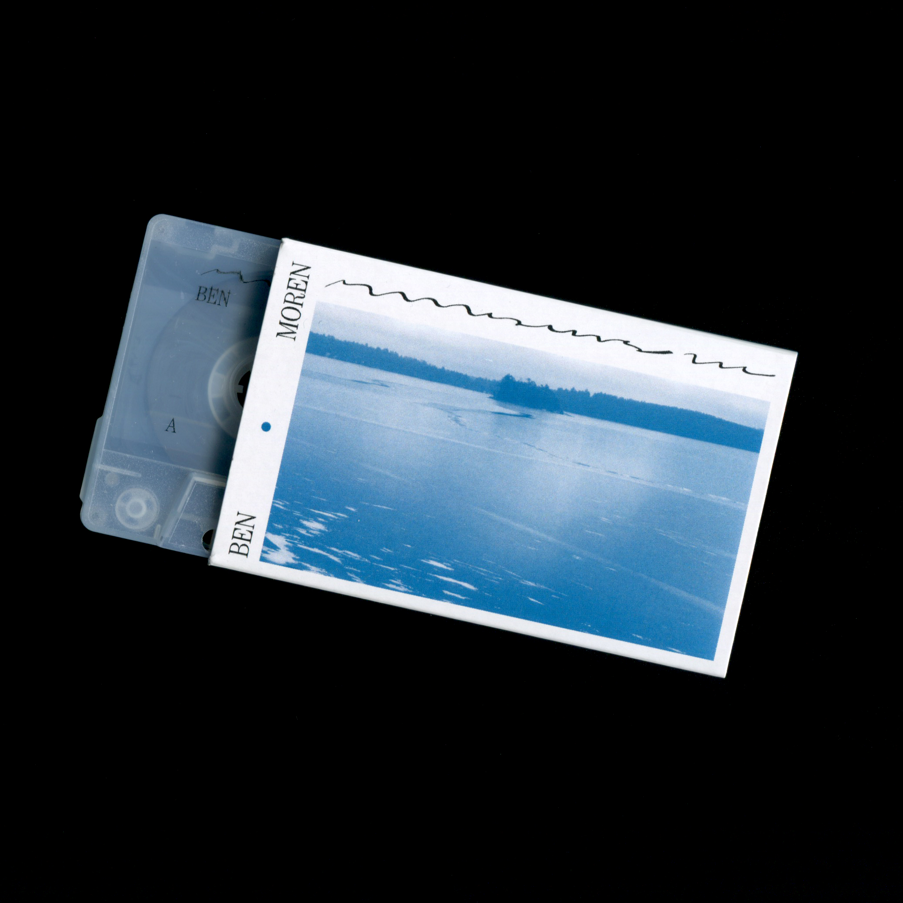

Recorded near and performed inside of a small cabin on Burntside Lake near Ely, Minnesota in the early winter of 2020. Field recordings of singing ice; fracturing ice sending reverberating sounds across a frozen lake, serve as the acoustic foundation of the album. Leveraging physical modeling resonators, responsive synth tones, and other sampling strategies; the resulting soundscapes invite you on a journey across thin ice, and under the surface.
Performed and Recorded on North Arm Burntside Lake, Ely, MN Mastered by John William Marks, Minneapolis, MN Graphic Design, Sara Fowler
Thanks to: The incredible community at llllllll.co, Maxwell Hoaglund, & Matt Rahaim
Singing Ice
2020/2021
synthesizer, field recording
Side A: 30 Minutes, Side B: Field Recording